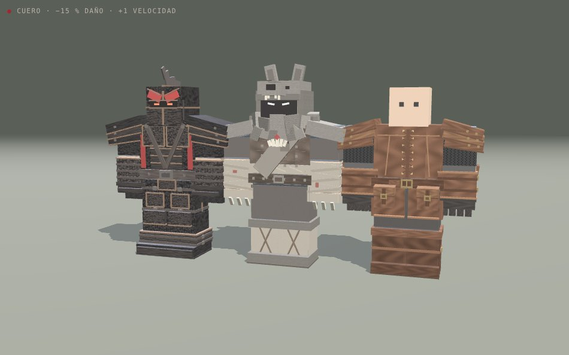

Construido con los mismos planos que usa el instalador de Studio: cada pieza es una Part soldada a una parte del cuerpo R15. «Cuerpo» oculta el maniquí para ver solo la armadura. Las texturas del visor imitan los materiales de Roblox que usan las piezas (Leather, Pebble, DiamondPlate para la malla, Carpet para el pelo).
ReplicatedStorage.Armor.EquipArmor:Invoke(jugador, "Dragon").roblox/InstallArmor.lua en la Command Bar.No se ha probado dentro de Roblox Studio; el reparto de piezas, el escalado y la reducción de daño sí, en una simulación.